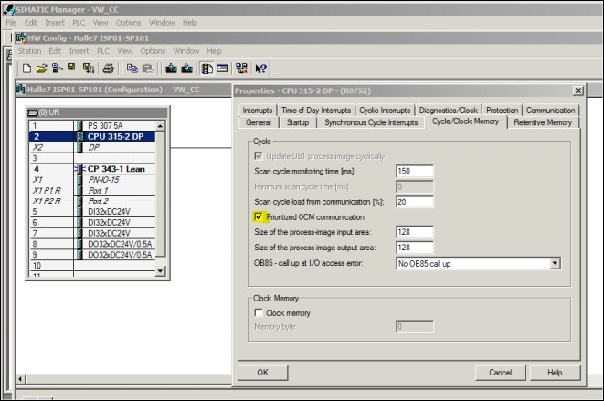
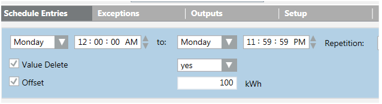

Troubleshooting
This section contains SICLIMAT X troubleshooting information.
Performance Guidelines
In some cases, the system response time for errors or operator action is too long. This may be due to Simatic S7 settings or a slow response of the CPU.
The issue can be resolved in the following ways:
- Turn off the cycle time limitation of 100 milliseconds in PLC, (engineering in SICLIMAT X).
- Check if it is possible to change the priority of the CPU to B&B.
- If neither of these steps help, you need to replace your CPU with a high-speed CPU.

Troubleshooting TECLA Scripts Migration
Manual Modification and Debugging
Describe the broad category of changes and extensions that might need to be carried out.
Handling Missing Functions | |||
TECLA Function Name EN | TECLA Function Name DE | Purpose | Workaround (if any) |
SETHEATING | XXYX | Sets the mode of heating control | Replace with equivalent DP writes |
Handling Missing Language Constructs
Certain language constructs available in TECLA do not have an equivalent in JavaScript, so that the cross-compiler in the migration tool generates a compiler error and the script is not migrated. In such cases, you need to revisit the TECLA script and modify it.
- Scripts with GOTO-MARK commands: These should be replaced by sub-function calls. Evaluate what happens on GOTO and what variables are required for the MARK
- Subroutines and the calling script must belong to the same system of a multi-system Desigo CC project. This can be recognized by a compiler error which signals that a function call in a given script cannot be resolved in the list of scripts destined for migration. We recommend that all TECLA scripts be migrated to a single system. Hence, please take care that the Start and Cancel commands refer to scripts in the same system.
- Debugger flags ‘#b# ‘ are used in TECLA scripts as breakpoint markers. Such a feature is not available in the JavaScript runtime of Desigo CC . You can use the F11 key to start execution of a script, which then begins a line-by-line progress (for example, you need to press F11 to step through the code). However, values of variable cannot be examined on the editor. For this purpose, use the Console
Unable to Resolve Data Point Reference
- Check if the device is imported in the network. You have created the logical view and user view.
- Check for the object hierarchy in user defined view, logical view, and Application View.
Troubleshooting Scheduler after SICLIMAT Export to System
Mistakes when setting COUNTER to a new value
Parameter Offset is missing and Value Delete is incorrect.
Measures:
Manually perform assignment in Desigo CC scheduler.

“No repeating of scheduled commands after connection time-out
If there is no S7 connected to Desigo CC at the scheduled time, the command is not repeated, once the connection is reestablished.